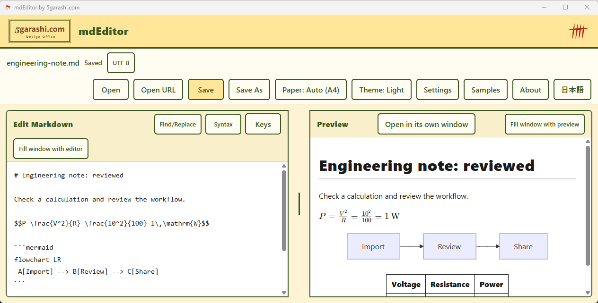

Keep diagrams and math
Preview Mermaid diagrams, KaTeX equations and tables. Export to Word, PDF, HTML and PNG.

mdEditor · WINDOWS
Bring Word, CSV and web pages into Markdown.
Edit with diagrams and math. Share Word, PDF, HTML or PNG.
Free for Windows. Check the Store for the available version and requirements.

Preview Mermaid diagrams, KaTeX equations and tables. Export to Word, PDF, HTML and PNG.
Open Word, CSV and web pages as Markdown. Word colors and layout are not preserved.
Adjust text size, spacing and typeface. Use the keyboard or voices installed on your PC.
THE REAL APP
A recording of the Windows app, with captions for every step.
The video could not play. Download the MP4 below and open it in a video player.
Shows Word, CSV and web import, then Word, PDF, HTML and PNG export. BGM starts when you play. Music: Light Steps v1 — 5garashi.com Design Office (composition and synthesis: Codex), CC BY 4.0; excerpt repeated with fades.
Recorded and tested with unmodified source build mdEditor 1.0.10. The current Store build is unverified. Includes captions and BGM, with no narration.
START WITH ONE
Short samples with no external images. Download and use them on your PC.
Start here. Edit a heading and a diagram label, then export the equation and table too.
Download Markdown — Diagrams and mathKeep a procedure in a flowchart, table and checklist.
Download Markdown — Document reviewA template for key points, sources and next actions.
Download Markdown — Organize an answerThe answer template is for your own notes. mdEditor has no AI generation feature and does not calculate values in equations or tables.
Existing sample with more diagram typesEditing, diagram and equation rendering, and PDF export happen locally. mdEditor itself does not collect or transmit documents or personal information.
Internet images require consent by default. Open URL fetches the specified https page. The server receives information such as your IP address. WebView2 updates and diagnostics follow Microsoft settings.
Read the privacy policy5garashi.com DESIGN OFFICE
mdEditor is developed by 5garashi.com Design Office. Visit our website to discuss tools for documents, work procedures and technical systems.